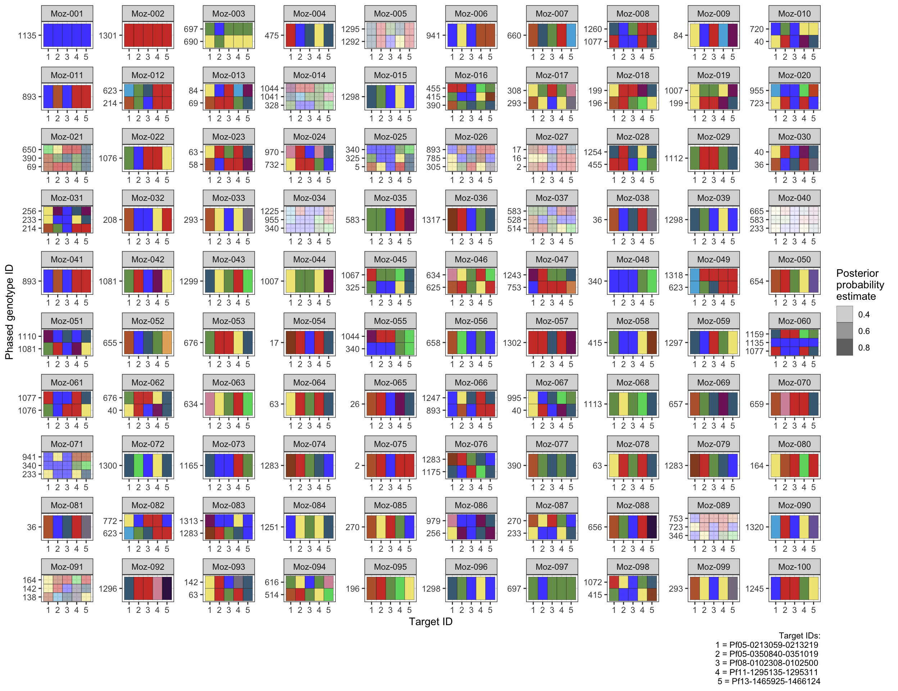

mhap <- import(here('data/amplicon/mozSim_MAD4HATTERDiversitySubPanel.tab.txt.gz'))Analyze data with malaria.em
Background
For this tutorial, we will be using the malaria.em package to phase and estimate the population-level frequency of multi-locus genotypes using simulated microhaplotype data from Mozambique (more info on the data here data can be found here). See the installation instructions if you haven’t installed malaria.em before.
The data
Load data from amplicon/mozSim_MAD4HATTERDiversitySubPanel.tab.txt.gz)
The simulated dataset includes 100 samples sampled from Mozambique and for a newer diversity panel called MAD^4HatTeR with 50 targets selected for their diversity. The data.frame contains four columns: sample, target, target_popUID, and readCnt. We will not exploit read count so we will remove this variable.
mhap <- mhap |> select(-readCnt)We have a total of 50 diversity targets (target) and a total of 574 unique alleles (target_popUID) across all targets.
For this tutorial, we will focus on only 5 targets for illustrative purposes, but also because malaria.em can be computationally intensive if there are many targets (i.e. haplotype combinations) and COI is high. We subset 5 targets at random below.
# targets_to_subset <- mhap |> distinct(target) |> slice_sample(n=5) |> pull(target)
targets_to_subset <- c("Pf05-0213059-0213219", "Pf05-0350840-0351019", "Pf08-0102308-0102500", "Pf11-1295135-1295311", "Pf13-1465925-1466124")
targets_to_subset[1] "Pf05-0213059-0213219" "Pf05-0350840-0351019" "Pf08-0102308-0102500"
[4] "Pf11-1295135-1295311" "Pf13-1465925-1466124"For the subset of 5 targets, there are a total of 55 unique alleles (target_popUID) across all targets.
Getting input ready for malaria.em
malaria.em expects a matrix with samples as rows and columns as the target loci. The observed alleles in each locus must be separated by a space, and the order of columns corresponds to the order of loci on a chromosome.
Therefore, we need to convert our data to wide format, filter to only the 5 targets and then save as a matrix.
mhap_matrix <- mhap |>
group_by(sample, target) |>
pivot_wider(names_from = target,
values_from = target_popUID,
values_fn = ~ paste(unique(.), collapse = " ")) |>
column_to_rownames(var = "sample") |>
select(any_of(targets_to_subset)) |> # this is optional, but we are doing this so that malaria.em runs relatively quickly.
as.matrix()Analysis
Running malaria.em
We are now ready to run the malaria.em::malaria_em() function. The function requires the following arguments:
genoor input matrix: each column represents the alleles observed in each of the target loci.sizesor coi: an integer or vector of possible COI in the observed data. If only using a fixed integer, this should include the maximum COI observed in the data, otherwise if the COI is a vector of length > 1, the estimation will assume a zero-truncated Poisson distribution on COI.locus.labelor allele names: a vector of allele names
We check the COI of our observed data.
mhap |>
filter(target %in% targets_to_subset) |>
count(sample, target, name = "n_alleles") |>
summarise(max_alleles_per_sample = max(n_alleles), .by = sample) |>
summarise(min_coi = min(max_alleles_per_sample),
max_coi = max(max_alleles_per_sample)) min_coi max_coi
1 1 3coi_range <- mhap |>
filter(target %in% targets_to_subset) |>
count(sample, target, name = "n_alleles") |>
summarise(max_alleles_per_sample = max(n_alleles), .by = sample) |>
summarise(min_coi = min(max_alleles_per_sample),
max_coi = max(max_alleles_per_sample)) |>
with(seq(min_coi, max_coi))Note that we have chosen a combination of 5 targets that have a max observed COI of 3 in the samples. This will take some trial and error for your own datasets given the haplotype combinatorics - but we found that when COI>3 for this simulated dataset was where malaria.em began to struggle.
Now let’s run malaria.em():
tic.clear()
tic.clearlog()
# recording how long this takes to run
tic("running malaria.em()")
output <- malaria.em::malaria.em(geno = mhap_matrix,
sizes = coi_range,
locus.label = colnames(mhap_matrix))The program is slow, please be patient......
finding possible haplotype combinations...
haploset size = 1
haploset size = 2
haploset size = 3
Starting em......
Done......toc(log = TRUE) running malaria.em(): 1499.852 sec elapsed# extract elapsed seconds
log_entry <- tic.log(format = FALSE)[[1]]
elapsed_secs <- log_entry$toc - log_entry$tic
message(sprintf("malaria.em took %.3f seconds", elapsed_secs))malaria.em took 1499.852 secondsmalariaem_run_time <- elapsed_secsThis took 25 minutes to run.
Taking a look at malaria.em output
The output object is a list of 10 objects. The documentation indicates they are as follows:
haplo.prob.tabmatrix of unique haplotypes, MLEs of estimated haplotype probabilities, and their standard errors.haplotypematrix of unique haplotypes. Each row represents a unique haplotype, and the number of columns is the number of loci.haplo.probvector of MLEs of haplotype probabilities. The ith element of hap.prob corresponds to the ith row of haplotype.haplo.prob.stdstandard error of the estimated haplotype frequencies.lambdaestimated Poisson parameter.NumofInfectionestimated number of infections.haplo.setsList of all possible haplotype combinations and their posterior probability per subject. The first column named ids is a vector for row index of subjects after expanding to all possible haplotype combinations for each subject. If ids=i, then i is the ith row of geno. If the ith subject has n possible haplotype combinations that correspond to their marker genotype, then i is repeated n times. The value in the second column is the row numbers of the unique haplotypes in the returned haplotype matrix.n.haplo.setvector of maximum number of haplotype combinations per subject that are consistent with their marker data in the matrix geno. The length of n.haplo.set = nrow(geno).pred.haplo.setPredicted haplotype combination that is consistent with their marker data for each subject. The values in pred.haplo.set are the row numbers of the unique haplotypes in the returned haplotype matrix.
output |> glimpse()List of 10
$ haplo.prob.tab: chr [1:1320, 1:7] "Pf05-0213059-0213219.00" "Pf05-0213059-0213219.00" "Pf05-0213059-0213219.00" "Pf05-0213059-0213219.00" ...
..- attr(*, "dimnames")=List of 2
.. ..$ : chr [1:1320] "1" "2" "3" "4" ...
.. ..$ : chr [1:7] "Pf05-0213059-0213219" "Pf05-0350840-0351019" "Pf08-0102308-0102500" "Pf11-1295135-1295311" ...
$ haplotype : chr [1:1320, 1:5] "Pf05-0213059-0213219.00" "Pf05-0213059-0213219.00" "Pf05-0213059-0213219.00" "Pf05-0213059-0213219.00" ...
..- attr(*, "dimnames")=List of 2
.. ..$ : NULL
.. ..$ : chr [1:5] "Pf05-0213059-0213219" "Pf05-0350840-0351019" "Pf08-0102308-0102500" "Pf11-1295135-1295311" ...
$ haplo.prob : num [1:1320] 7.72e-08 9.64e-03 1.08e-04 4.80e-07 8.76e-03 ...
$ haplo.prob.std: num [1:1320] 0.00166 0.00959 0.002 0.00115 0.00349 ...
$ lambda : num 1.04
$ lambda.std : num 0.00163
$ NumofInfection: num 1.61
$ haplo.sets :'data.frame': 22934 obs. of 3 variables:
..$ ids : int [1:22934] 1 1 1 2 2 2 3 3 3 3 ...
..$ haplo.set: chr [1:22934] "1135" "1135 1135" "1135 1135 1135" "1301" ...
..$ post.p : num [1:22934] 9.94e-01 6.42e-03 2.77e-05 9.97e-01 3.23e-03 ...
$ n.haplo.set : int [1:100] 3 3 1328 3 10 3 3 44 3 232 ...
$ pred.haplo.set: chr [1:100] "1135" "1301" "697 690" "475" ...
- attr(*, "class")= chr "malaria.em"Summarizing population-level genotype frequencies
We can now take a look at the estimated population-level multi-locus genotype (MLG) frequencies. We will reshape the output$haplo.prob.tab to create an object in long-format for plotting.
Every unique multi-locus genotype is composed of a set of alleles at K target loci. In this tutorial each MLG has length(targets_to_subset) target loci. The outputs from malaria.em keep track of MLG ID indices (row index, gt_id) that we now need to link back to our original target and target_popUIDs labels before pivotting to long-format.
# Population-level multilocus genotype frequency estimate + standard error
gt_freq_summary <- output$haplo.prob.tab |>
as.data.frame() |>
# get our gt_id from our row index
rowid_to_column("gt_id") |>
pivot_longer(cols = -c("gt_id", "hap.prob", "hap.prob.std"),
names_to = "target",
values_to = "target_popUID") |>
select (gt_id,
target,
target_popUID,
freq = hap.prob,
freq_se = hap.prob.std)Our new gt_freq_summary data frame looks like this, where we now have our gt_id linked to the target loci names and alleles target_popUID that comprise each gt_id.
gt_freq_summary |> head()# A tibble: 6 × 5
gt_id target target_popUID freq freq_se
<int> <chr> <chr> <chr> <chr>
1 1 Pf05-0213059-0213219 Pf05-0213059-0213219.00 7.72392295022328e-… 0.0016…
2 1 Pf05-0350840-0351019 Pf05-0350840-0351019.00 7.72392295022328e-… 0.0016…
3 1 Pf08-0102308-0102500 Pf08-0102308-0102500.0 7.72392295022328e-… 0.0016…
4 1 Pf11-1295135-1295311 Pf11-1295135-1295311.00 7.72392295022328e-… 0.0016…
5 1 Pf13-1465925-1466124 Pf13-1465925-1466124.00 7.72392295022328e-… 0.0016…
6 2 Pf05-0213059-0213219 Pf05-0213059-0213219.00 0.00963620874391006 0.0095…Because there are many MLGs with low frequencies, we will filter for any with a frequency > 0.001.
gt_freq_summary %>%
mutate(gt_id = factor(gt_id),
freq = as.numeric(freq),
freq_se = as.numeric(freq_se),
gt_id = fct_reorder(gt_id, freq)) %>%
# Arbitrary filtering for easier viz
filter(freq > 0.001) %>%
ggplot(aes(x = gt_id, y = freq)) +
geom_point() +
geom_errorbar(aes(ymin = freq - freq_se,
ymax = freq + freq_se)) +
labs(x = "Multi-locus genotype ID",
y = "Population-level frequency estimate + SE") +
theme_bw() +
theme(axis.text.x = element_text(angle = 90, hjust = 1))Summarizing sample-level phased genotypes
A major advantage of malaria.em is that we can obtain phased multi-locus genotypes with corresponding posterior probability estimates. In this tutorial we do not explore the full posterior probabilities of each multi-locus genotype, but rather we focus on the ‘predicted’ multi-locus genotype and corresponding posterior probability estimate in the output$pred.haplo.set. Note that a haplo.set as referred to by malaria.em can be either one multi-locus genotype (a set of alleles observed at K loci) if COI is 1 or a set of multi-locus genotypes if COI > 1 (set with >1 multi-locus genotypes). So we have multiple layers embedded within our outputs that need to be linked together.
The outputs from malaria.em keep track of subject or sample ID indices (row index, ids) and MLG IDs (gt_id) that we now need to link back to our actual sample names, as well as our original target and target_popUIDs labels (remember each gt_id is actually composed of K targets).
# get the most probable MLG per sample
haplo_pred <- as.data.frame(output$pred.haplo.set) |> rename(haplo.set = `output$pred.haplo.set`) |> rowid_to_column("ids")
# get the posterior probabilites for all MLGs
haplo_pred_prob <- as.data.frame(output$haplo.sets)
# get the sample names corresponding to row indices in matrix (this is what malaria.em uses in the output objects)
sample_name <- mhap_matrix |> as.data.frame() |> rownames_to_column("sample") |> distinct(sample) |> rowid_to_column("ids")
# create gt_phase_summary object, start from haplo_pred
gt_phase_summary <- haplo_pred |>
as.data.frame() |>
# get the posterior probability for each MLG set (haplo.set)
left_join(haplo_pred_prob,
by = join_by(ids, haplo.set)) |>
# get sample name
left_join(sample_name, join_by(ids)) |>
# rearrange and rename
select(sample,
haplo.set,
posterior_est = post.p) |>
# separate into one row per MLG
separate_rows(haplo.set, sep = " ") |>
rename(gt_id = haplo.set) |>
mutate(gt_id = as.integer(gt_id)) |>
# now get gt info, including the target and target_popUID that make up a gt_id
left_join(gt_freq_summary, join_by(gt_id), relationship = "many-to-many") |>
select(sample, target, target_popUID, gt_id, posterior_est) |>
# create a variable to identify unique phased mlgs within a sample
mutate(phase_id = dense_rank(gt_id), .by = sample)Our new gt_phase_summary data frame looks like this:
gt_phase_summary |> head()# A tibble: 6 × 6
sample target target_popUID gt_id posterior_est phase_id
<chr> <chr> <chr> <int> <dbl> <int>
1 Moz-001 Pf05-0213059-0213219 Pf05-0213059-021321… 1135 0.994 1
2 Moz-001 Pf05-0350840-0351019 Pf05-0350840-035101… 1135 0.994 1
3 Moz-001 Pf08-0102308-0102500 Pf08-0102308-010250… 1135 0.994 1
4 Moz-001 Pf11-1295135-1295311 Pf11-1295135-129531… 1135 0.994 1
5 Moz-001 Pf13-1465925-1466124 Pf13-1465925-146612… 1135 0.994 1
6 Moz-002 Pf05-0213059-0213219 Pf05-0213059-021321… 1301 0.997 1For plotting we create a custom_palette() function that can generate unique colors for each combination of target/target_popUID. We save our pal object for plotting.
custom_palette <- function(gt_phase_summary){
gt_phase_summary |>
distinct(target, target_popUID) |>
group_by(target) |>
# generate unique color for each target/target_popUIS combo, ggsci is a good option as it has a lot of colors (>30 I think)
mutate(color = paletteer::paletteer_d("ggsci::default_igv")[1:n()]) |>
ungroup() |>
# generate unique key for target_id/target_popUIS combo
mutate(key = paste(target, target_popUID, sep = "::")) |>
# get palette vector
with(set_names(color, key))
}
pal <- custom_palette(gt_phase_summary)We also use the fill to show the posterior probability estimate of the phased multi-locus haplotype, with lighter/more transparent indicating low probability/confidence.
gt_phase_summary |>
# create key variable
mutate(key = paste(target, target_popUID, sep = "::"),
# this is an arbitrary labeling for now for easier viz
target_id_short = dense_rank(target)
) |>
ggplot(aes(x = target_id_short, y = factor(gt_id), fill = key)) +
geom_tile(aes(alpha = posterior_est), color = "grey10") +
scale_fill_manual(values = pal) +
facet_wrap(~sample, scales = "free") +
labs(x = "Target ID",
y = "Phased genotype ID",
alpha = "Posterior \nprobability \nestimate",
caption = "Target IDs:\n 1 = Pf05-0213059-0213219 \n 2 = Pf05-0350840-0351019 \n 3 = Pf08-0102308-0102500 \n 4 = Pf11-1295135-1295311 \n 5 = Pf13-1465925-1466124") +
guides(fill = F) +
theme_bw() Warning: The `<scale>` argument of `guides()` cannot be `FALSE`. Use "none" instead as
of ggplot2 3.3.4.
Summary
In this tutorial, we have shown how to run malaria.em on simulated microhaplotype data to estimate multi-locus genotype frequencies and compute the maximum likelihood estimation for phased multi-locus genotypes within samples. The malaria.em algorithm is very powerful and provides one of the few available tools for phasing multi-locus data and estimating multi-locus genotype frequencies. However, there are several limitations to consider:
- The program can be very slow and is not computationally efficient when the haplotype combinatorics are too complex (eg high COIs, many loci, many samples). Depending on the complexity of your data, the program may not be suitable.
- The ‘predicted’ multi-locus haplotypes are probabilistic phased estimates, so communciating the probability estimates is very important for downstream interpretation!